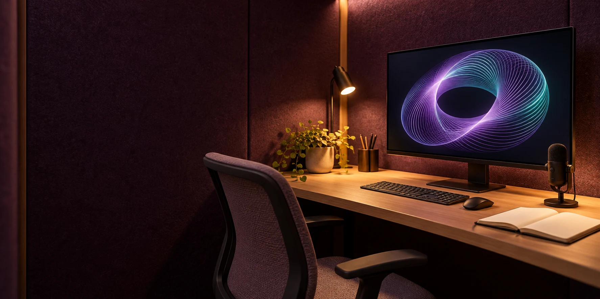

02 / PERSONAL INTELLIGENCE
An Aura that
grows with you.
Your interests, your memories, your direction. A personal AI environment shaped through a continuing relationship with you.
Give your context a home.
Aura of Intelligence is proposed as a personally owned AI environment that connects memories, interests, skills, values, relationships and ongoing projects. It could help you recover earlier decisions, follow a line of thought and develop work over time.
Its boundary is “clothing, not skin”: an external, removable system. The proposal calls for the operator to control their personal archive, direct its development, export usable records and end the arrangement.
The spatial design draws on seven nested horn tori, with personal information on internal faces and approved public material on external surfaces. Lists, text and voice would offer other ways to explore the same records.
Decide what help looks like.
“I want help finding my earlier writing, learning music and following local planning proposals. I prefer my existing phone and a service I trust to process selected writing. I want an export I can use elsewhere and a monthly spending limit.”Illustrative personal brief · proposal, page 7
A plan would name your goals, preferred interfaces, trusted devices and services, budget, support and access needs. Compare where information travels, who can read it, ongoing costs and what happens when you leave.
Choose what goes where.
Public
Material you deliberately release for an agreed audience and purpose.
Private
Personal records available only to named people, devices or processes under your chosen conditions.
Secret
Sensitive material with stronger separation and protection where you choose it.
Storage, interpretation, personal model training, external actions and publication would each have their own permission. Transcripts, summaries and adapted models would inherit their source restrictions.
A working setup would demonstrate transfers, correction, export, deletion and recovery. Processing can require readable information, so encryption alone does not establish who has access.
A useful relationship takes practice.
Begin with a defined task and selected sources. Review responses, correct errors and retain the context of those corrections. Retrieval can bring relevant records into a task; model training changes a model and would require a separately approved dataset and evaluation.
Optional expansion could include creative tools, a measured avatar, memory spaces, travel, household assistance or community projects. Equipment, costs, data access and support would be described for each option.
Explore Aura in the Genesis atlas ↗